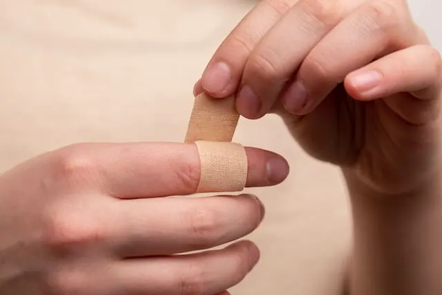

1. Make your plasters more secure
Cut your finger? To prevent plasters from sliding off your fingers so easily, cut a slit on either side of the plaster to create four smaller sticky strips. You can then criss-cross the strips over each other to create a more secure fit.
2. Cool your warm soda cans down in minutes
If you are ever faced in a situation where your cans of soda are warm but you don't have time for them to cool in the fridge, simply fill a large container with ice and water and add a generous amount of salt. Stir the mixture until all the salt has dissolved and add in your cans (make sure they are sealed!). Leave for around 5 minutes and you will have perfectly chilled drinks!
3. Transport heavy items using a suitcase
If you ever find yourself moving heavy items such as books and boxes don't cut it, use a suitcase. Simply place your heavy items within a suitcase and you will be able to transport your heavy items with greater ease by wheeling them from one destinaition to another.
4. Get those hard to clean oil stains out of your tuppaware
To make washing oily tuppaware easy, place hot water, washing up liquid and a piece of tissue in your oil stained tuppaware box and seal the container with the lid. Shake vigorously for around 30-45 seconds and all the oil will be stripped away.
5. Remove chewing gum using an ice pack
Got chewing gum stuck in your hair or in the carpet? Don't worry! Simply put some ice cubes in a resealable bag and place on the the piece of stuck chewing gum until it becomes hard and brittle. Once its reached this stage you can easily pick it off or use a spoon to scrape it off of carpeted areas.
6. Use coffee ice cubes in your iced coffee
If you dont want your iced coffees to get watered down by ice cubes made from water, then use ice cubes made from coffee! Fill your ice cube tray with coffee and allow to freeze and then use in place of regular ice cubes. Even if you're not a coffee drinker, you can use this hack for any chilled beverage such as fruit juices.